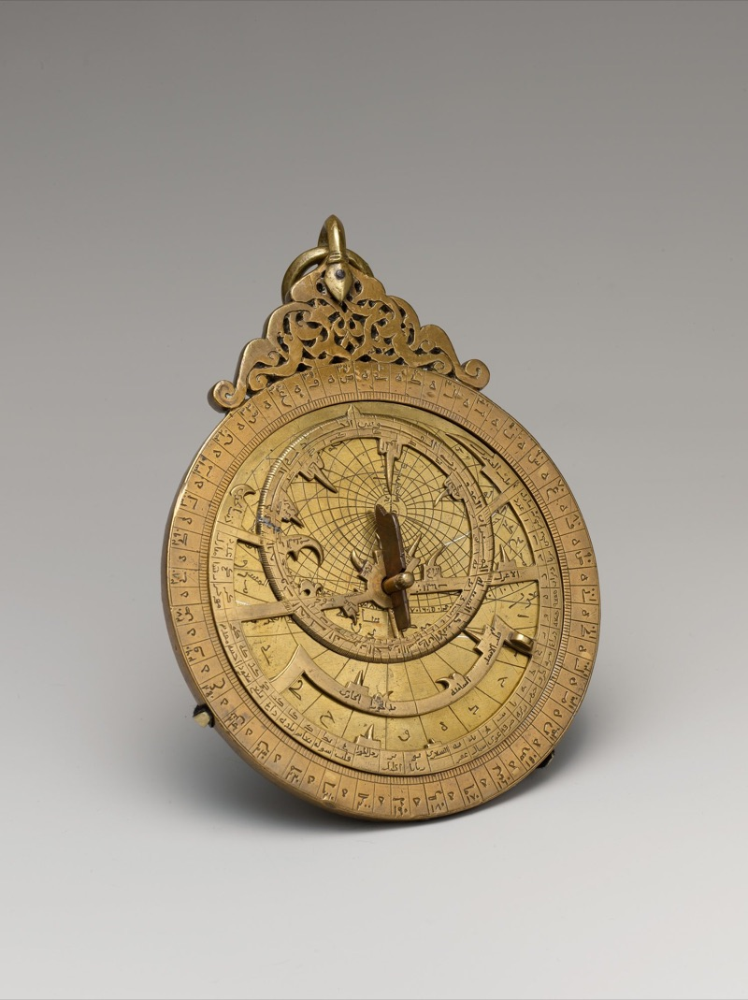
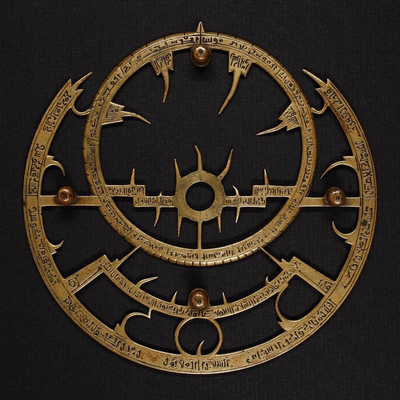
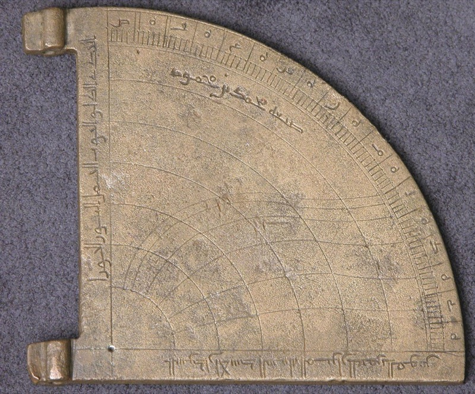
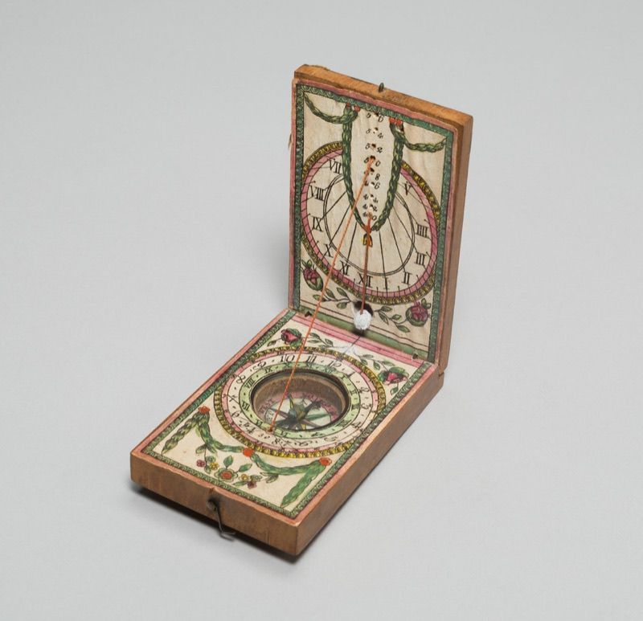

Prayer times and Quran, calmly.
Qalm, said like calm, works out each prayer time from the sun over your city. No ads, ever.
Today in New York
- Fajr 5:57 AM
- Sunrise 7:13 AM
- Dhuhr 12:42 PM
- Asr 3:40 PM
- Maghrib 6:08 PM
- Isha 7:24 PM
Coming to iPhone, Apple Watch and Mac in April 2027.
Press Tab to use the app preview, Escape to leave.
Asr, when the shadow grows
A stick's shadow reaches its length plus its noon shadow, 2.24 times the stick, at 3:40 PM in New York.
3:40 PM Sun 24° above the horizon Shadow 2.2 × the stick
ISNA, 15° for Fajr and Isha.
At your latitude the sun does not set or the sky stays light today, so these times are estimates. Many communities follow the times of Makkah or the nearest city with a normal night. Ask your imam.
Move the slider or scroll. Times come from adhan-js, the calculation family the app uses.
Measured for a thousand years
Before clocks, prayer times were found with brass and a shadow.

1291
Astrolabe of al-Muzaffari, Yemen
13th century. The Metropolitan Museum of Art.
Its plate maps the sky for one latitude. Turn the rete over it and the hour can be read from the sun or a star.

1029
Rete of an Andalusian astrolabe
11th century. Wikimedia Commons.
The pointers of this openwork rete are stars. Set against the plate, they show the sky at any hour.

10th
Horary quadrant
10th century. The Metropolitan Museum of Art.
Sight the sun along one edge and a plumb line falls across the hour lines.

1790
Compass sundial
About 1790, 18th century. Art Institute of Chicago.
A gnomon and a compass in one case. Once the needle finds north, the shadow gives the hour.
The method sets the times
Qalm starts with the usual method for your country and says why. Change it to match your mosque and every time updates.
US default: ISNA. Many US mosques use this. Moonsighting Committee is a common alternative.
Custom angles and minute adjustments are in the app.
Qibla, 58.5° from New York
Facing east-northeast, computed from New York. The compass says when its accuracy is low.
Move the slider to turn.
Facing north. Turn right 58 degrees.
The Quran, where you left off
Arabic text in Amiri Quran, unmodified from Tanzil. Search it, bookmark it, and open it where you stopped.
بِسْمِ ٱللَّهِ ٱلرَّحْمَٰنِ ٱلرَّحِيمِ
Finish the Quran by a date you choose
Choose a finish date and Qalm works out a daily amount. Part of Qalm Plus.
1 juz a day Finish on November 20.
The last ten nights
Ten nights, the odd ones marked, with a reminder you can switch on for each. Part of Qalm Plus.
- 21Odd night
- 22
- 23Odd night
- 24
- 25Odd night
- 26
- 27Odd night
- 28
- 29Odd night
- 30
An alert, when you want it
Choose a sound, a chime or a silent banner for each prayer.
The sound comes with the app.
Wherever you look
One day of prayer times, drawn for each screen it is planned for.
Coming to iPhone, Apple Watch and Mac. Widgets for the Home Screen, Lock Screen and StandBy.
Design preview. The app is not out yet.
Built to collect nothing
No accounts, no ads, no analytics. Your location is used on your device to work out times and the Qibla.
Alerts end on November 2, and Qalm tops them up each time you open it.
Qibla accuracy is shown, so you know when the compass is unsure.
Above 48°, Qalm uses the one-seventh rule and tells you. Where the sky stays light, times are marked as estimates.
Every method is named with the reason it was chosen.
Free, and Qalm Plus
Free, for good
For everyone who prays.
0 USD, always
Prayer times for any place and every method, prayer alerts, Qibla, Home Screen, Lock Screen and StandBy widgets, the Arabic Quran with translation, bookmarks, search and the Ramadan countdown.
Qalm Plus
For a daily Quran habit, the Watch and the Mac.
34.99 USD a year, after 7 days free
Or USD 4.99 a month, or USD 79.99 once. Adds a khatm planner, a consistency view, a prayer log, tajweed colours, reading themes and notes, full-length alarms on iOS 26, the Apple Watch app, the Mac menu bar app and Ramadan tools. Family Sharing is on.
Questions
When does Qalm launch?
It is planned for the App Store in April 2027. Until then nothing is for sale, and this page keeps nothing about you.
Which method does Qalm use?
The usual one for your country, with the reason shown: ISNA in the US, Moonsighting Committee in the UK, Umm al-Qura in Saudi Arabia, Karachi with Hanafi Asr in South Asia. You can choose any method.
Why might my mosque's times differ?
Mosques choose different angles, Asr rules and safety minutes, and some print a fixed timetable. Follow your mosque. Qalm lets you adjust each time by minutes to line up with it.
What about high latitudes?
Above 48°, summer nights may not get fully dark, so Qalm uses the one-seventh rule and tells you. Where the sun does not set or rise, times are marked as estimates. Ask your imam.
What does Qalm collect?
Nothing about you. Qalm has no accounts, no ads and no analytics, and your location stays on your device.
Does it work on Apple Watch and Mac?
Qalm is coming to iPhone, Apple Watch and Mac. The Watch app and the Mac menu bar app are planned as part of Qalm Plus.
What is free?
Prayer times, alerts, Qibla, widgets and the Arabic Quran with translation are free, and will stay free.
What about Ramadan?
Suhoor and iftar times and a Ramadan countdown are free. Plus adds a fasting log, a 30-day khatm plan and a view of the last ten nights.
Does this page track me?
No. No analytics, no cookies. Your city is worked out in your browser and is not sent to Qalm. Fonts and scripts load from Google Fonts, jsDelivr and cdnjs, which see your IP address as any web server does.
Coming April 2027
Next in New York: Maghrib at 6:08 PM.